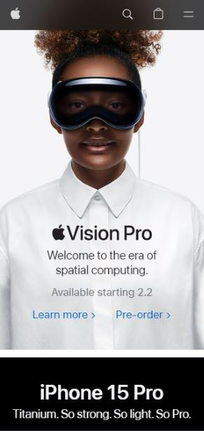

Hick's Law
Strat-O-Matic
strat-o-matic.comI believe that this shows Hick's Law because this page shows very few options to choose from. The visitor to the site can choose either baseball or football and, therefore, their decision should be quick.
Visual Hierarchy
Riot Games
leagueoflegends.comI believe that this shows hierarchy because the most prominent thing on the page advertises that you can play for free if you click on the button. The site shows other, less prominent information, but the viewer is immediately drawn to the play for free button.
White Space and Clean Design
Apple
apple.com I believe that this shows good use of white space. The site alternates between sections that have black print on white background and sections that have white print on black background. This is a clean contrast that enhances the organization of the page.